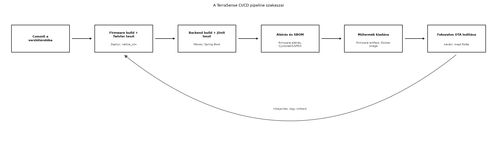

A TerraSense fejlesztése során a ts-node firmware, a
ts-gw gateway és a ts-backend kódbázisa
párhuzamosan változik. A kézi build és telepítés lassú, hibás és nem
reprodukálható: egy fejlesztő más Zephyr SDK-val, más függőségverziókkal
vagy más Docker-alaprendszerrel dolgozik, mint a kollégája, ezért a
tesztelés eredménye nem megbízható. A biztonsági frissítéseknél (lásd OTA-frissítés: A/B képek, rollback, delta, fokozatos
kiadás) és a teljes rendszer átvételénél (Záróprojekt: a teljes TerraSense rendszer összeállítása
és átvétele) a kiadott műtermékeknek – firmware, konténerképek,
konfigurációk – visszakövethetőnek, aláírtnak és ellenőrzöttnek kell
lenniük. A CI/CD folyamat ezt automatizálja: minden commit után futtat
buildet, teszteket, aláírást és SBOM-generálást, majd a kiadási
szakaszban előkészíti a fokozatos OTA-telepítést.
Definíció. A folytonos integráció (Continuous Integration, CI) olyan gyakorlat, amelyben a fejlesztők kódváltoztatásai egy közös verziótárolóba kerülve automatikusan buildelésre és tesztelésre kerülnek. Célja a hibák korai felismerése és a mindig működő főág fenntartása.
Definíció. A folytonos szállítás (Continuous Delivery, CD) a CI kiterjesztése: az ellenőrzött műtermékek automatikusan kiadható állapotba kerülnek, és a telepítés – esetünkben a fokozatos OTA – felügyelt, jóváhagyott lépésben történik. Ha a telepítés is teljesen automatikus, folytonos telepítésről (Continuous Deployment) beszélünk. Az IoT-ban a CD többnyire emberi vagy policy-alapú jóváhagyást igényel a flotta mérete és a visszafordíthatóság miatt.
Definíció. A pipeline szakaszokból (stage) álló automatizált folyamat, amelyben egy szakasz kimenete a következő bemenete. Egy tipikus IoT-pipeline szakaszai: előkészítés, build, teszt, aláírás, SBOM, műtermék-kiadás, OTA-kiadás.
Definíció. A reprodukálható build azt jelenti, hogy ugyanabból a forrásból, ugyanazokkal a függőségekkel és eszközökkel bárki, bármikor ugyanazt a bináris vagy konténerkép műterméket állítja elő. Ez a biztonsági audit és a visszakövethetőség alapja.
Definíció. Az SBOM (Software Bill of Materials, szoftver-összetevőjegyzék) géppel olvasható lista a szoftver összes alkotóeleméről, függőségéről, verziójáról és licencéről. Az SBOM a sebezhetőség-ellenőrzés bemenete, és a Cyber Resilience Act követelményei között is szerepel.
Az alábbi ábra a TerraSense pipeline fő szakaszait és azok sorrendjét mutatja:

A fenti folyamatábra lépései szöveggel is leírva:
ts-node, a
ts-gw vagy a ts-backend kódot a közös tárolóba
tolja.west twister tesztfuttató a
host-tesztekkel (lásd Eszközszoftver tesztelése a
hoston).| Kérdés | Változatok | Kompromisszum |
|---|---|---|
| Hol futtassuk a buildet? | Konténerben | Reprodukálható, de nagyobb erőforrásigény; a konténer verzióját is rögzíteni kell. |
| Natív CI-gépen | Gyorsabb lehet, de a toolchain eltérése rejtett hibákat hoz be. | |
| Milyen tesztet futtassunk a pipeline-ban? | Csak unit + host-teszt | Gyors, de nem fedi a valós hardver hibáit. |
| HIL vagy hardveres célra is | Lassabb, drágább, de közelebb a valósághoz; TerraSense
alapértelmezésben native_sim-et használ. |
|
| Mikor generáljunk SBOM-ot? | Minden buildnél | Naprakész, de növeli a futási időt és a tárolási költséget. |
| Csak release-nél | Kisebb költség, de a köztes build sebezhetősége észrevétlen maradhat. | |
| Hogyan kezeljük az aláírási kulcsot? | HSM-ben vagy biztonságos kulcstárolóban | Erős védelem, de költségesebb; laborban szoftveres kulcs elég, jelölten csak tesztcélra. |
| A CI-ben fájlként | Egyszerű, de a kulcsszivárgás súlyos kockázat. | |
| Fokozatos OTA kiadásnál? | Kanári → béta → teljes | Kellő visszajelzés és rollback lehetőség, de lassabb terítés. |
| Azonnali teljes terítés | Gyors, de egy hibás kép az egész flottát leállíthatja. |
A TerraSense-ben konténeres buildet, minden buildnél komponensenkénti SBOM-generálást, kiadási szakaszban aláírást és kanári-alapú fokozatos OTA-t használunk.
A példa egy konkrét GitLab CI-konfiguráció, nem
szolgáltató-semleges sablon. A .gitlab-ci.yml a GitLab CI
17.x szintaxisát használja (stages, needs,
artifacts, environment, rules),
mert ezek a szemantikai elemek csak egy konkrét CI-rendszerben
validálhatók. A futtatáshoz a következő runnerkörnyezet kell:
backend-test és a
publish-backend Docker-in-Docker szolgáltatást használ,
ezért ezek a jobok privileged runnert igényelnek, a többi job nem kap
Docker socketet;registry.lab.internal belső registry és a
ci/Dockerfile.* fájlokból egyszer buildelt, rögzített
címkéjű buildimage-ek;v* tag és védett firmware-signing,
illetve production-ota environment a GitLab-projekt
beállításaiban.A pipeline a saját, mellékelt Dockerfile-okból származó image-eket
használja, így a Zephyr SDK, a CMake, a Paho és a Maven verziója nem a
runner véletlen állapotától függ. A termelési ágon a
image-hivatkozásokat a ci/images.lock fájlban rögzített
digestekre kell cserélni (crane digest <image>); a
könyvben a olvashatóbb tag-alak szerepel.
1. A west manifest. A west init -l .
csak akkor reprodukálható, ha a repo gyökerében van
west.yml, amely a Zephyr 3.7.0 LTS-t és a szükséges
modulokat rögzíti:
# west.yml – TerraSense west manifest
manifest:
remotes:
- name: zephyrproject-rtos
url-base: https://github.com/zephyrproject-rtos
projects:
- name: zephyr
remote: zephyrproject-rtos
revision: v3.7.0
import:
name-allowlist:
- cmsis
- hal_nordic
- mbedtls
- mcuboot
- segger
- tinycrypt
self:
path: .A name-allowlist szándékosan szűk: csak a
nrf52840dk/nrf52840 boardhoz és az MCUboot-hoz szükséges
modulokat húzza be. A west update által létrehozott
zephyr/, modules/, bootloader/ és
tools/ könyvtár a .gitignore-ba kerül, mert a
CI minden jobban frissen állítja elő őket.
2. A buildimage-ek. A firmware-build image a Zephyr
SDK 0.16.8-at használja, amely a Zephyr 3.7.0 LTS-hez tartozó SDK. A
ci/Dockerfile.firmware:
FROM ubuntu:24.04
ARG ZEPHYR_SDK_VERSION=0.16.8
ENV DEBIAN_FRONTEND=noninteractive
RUN apt-get update \
&& apt-get install -y --no-install-recommends \
build-essential ca-certificates ccache cmake device-tree-compiler \
git gperf ninja-build python3 python3-pip python3-venv \
wget xz-utils \
&& rm -rf /var/lib/apt/lists/*
RUN python3 -m venv /opt/venv \
&& /opt/venv/bin/pip install --no-cache-dir west==1.2.0
ENV PATH="/opt/venv/bin:${PATH}"
RUN SDK_FILE="zephyr-sdk-${ZEPHYR_SDK_VERSION}_linux-x86_64.tar.xz" \
&& SDK_BASE="https://github.com/zephyrproject-rtos/sdk-ng/releases/download" \
&& wget -q "${SDK_BASE}/v${ZEPHYR_SDK_VERSION}/${SDK_FILE}" \
&& wget -q "${SDK_BASE}/v${ZEPHYR_SDK_VERSION}/${SDK_FILE}.sha256" \
&& EXPECTED=$(cut -d' ' -f1 "${SDK_FILE}.sha256") \
&& ACTUAL=$(sha256sum "${SDK_FILE}" | cut -d' ' -f1) \
&& test "$EXPECTED" = "$ACTUAL" \
&& tar -xJf "${SDK_FILE}" -C /opt \
&& /opt/zephyr-sdk-${ZEPHYR_SDK_VERSION}/setup.sh -t arm-zephyr-eabi -h -c \
&& rm "${SDK_FILE}"*
ENV ZEPHYR_SDK_INSTALL_DIR=/opt/zephyr-sdk-${ZEPHYR_SDK_VERSION}A setup.sh -t arm-zephyr-eabi -h -c csak az ARM
eszközláncot és a hoszteszközöket telepíti; a native_sim
Twister-tesztekhez a hoszt gcc-je kell, amelyet a
build-essential ad. A gateway buildimage a CMake és a Paho
C++ 1.3.2 függőséget garantálja
(ci/Dockerfile.gateway):
FROM ubuntu:24.04
ENV DEBIAN_FRONTEND=noninteractive
RUN apt-get update \
&& apt-get install -y --no-install-recommends \
build-essential ca-certificates cmake pkg-config libpaho-mqttpp3-dev \
&& rm -rf /var/lib/apt/lists/*
RUN pkg-config --modversion paho-mqttpp3 | grep -qx '1.3.2'A grep -qx '1.3.2' szándékosan megbuktatja a buildet, ha
az Ubuntu 24.04 csomagja nem a rögzített Paho-verziót adja, így a
pipeline nem linkel csendben más API-t. Az imgtool saját, kisméretű
image-et kap (ci/Dockerfile.imgtool), hogy a sign jobban ne
legyen jelen a teljes Zephyr SDK:
FROM python:3.12.7-slim
RUN pip install --no-cache-dir imgtool==2.1.03. A teljes pipeline. A .gitlab-ci.yml
a következő. A firmware-build a valódi
nrf52840dk/nrf52840 boardra épít MCUboot-kompatibilis
alkalmazásképet, a firmware-test native_sim
célon futtatja a Twister-teszteket. A kétféle build szándékosan külön
job: a native_sim zephyr.exe hosztfuttatható
program, nem MCUboot-kép, ezért nem nevezhető át .bin-re és
nem írható alá firmware-képként.
# .gitlab-ci.yml – TerraSense CI/CD (GitLab CI 17.x, Docker executor)
stages: [build, test, sbom, sign, publish, release]
variables:
ZEPHYR_BUILD_IMAGE: registry.lab.internal/terrasense/ci/zephyr-build:3.7.0-0.16.8
GATEWAY_BUILD_IMAGE: registry.lab.internal/terrasense/ci/gateway-build:24.04-1.3.2
MAVEN_IMAGE: maven:3.9.9-eclipse-temurin-21
IMGTOOL_IMAGE: registry.lab.internal/terrasense/ci/imgtool:2.1.0
SYFT_IMAGE: registry.lab.internal/terrasense/ci/syft:1.14.0
GRYPE_IMAGE: registry.lab.internal/terrasense/ci/grype:0.86.0
IMAGE_REGISTRY: registry.lab.internal
GIT_DEPTH: "20"
GIT_STRATEGY: fetch
.ci-rules:
rules:
- if: '$CI_PIPELINE_SOURCE == "merge_request_event"'
- if: '$CI_COMMIT_TAG =~ /^v\d+\.\d+\.\d+$/'
- if: '$CI_COMMIT_BRANCH == $CI_DEFAULT_BRANCH'
.release-rules:
rules:
- if: '$CI_COMMIT_TAG =~ /^v\d+\.\d+\.\d+$/'
firmware-test:
stage: test
image: $ZEPHYR_BUILD_IMAGE
extends: .ci-rules
script:
- west init -l .
- west update --narrow -o=--depth=1
- west twister -p native_sim -T tests --inline-logs --outdir twister-out
artifacts:
when: always
paths:
- twister-out/twister.json
- twister-out/**/handler.log
expire_in: 1 week
firmware-build:
stage: build
image: $ZEPHYR_BUILD_IMAGE
extends: .ci-rules
script:
- west init -l .
- west update --narrow -o=--depth=1
- west spdx --init -d build-release/spdx
- west build -b nrf52840dk/nrf52840 ts-node --build-dir build-release
-- -DCONFIG_BOOTLOADER_MCUBOOT=y
- west spdx -d build-release/spdx
- mkdir -p artifacts/sbom
- cp build-release/zephyr/zephyr.bin artifacts/ts-node_${CI_COMMIT_SHORT_SHA}.bin
- cp build-release/zephyr/zephyr.elf artifacts/ts-node_${CI_COMMIT_SHORT_SHA}.elf
- cp build-release/partitions.yml artifacts/partitions.yml
- sha256sum artifacts/ts-node_${CI_COMMIT_SHORT_SHA}.bin
> artifacts/ts-node_${CI_COMMIT_SHORT_SHA}.bin.sha256
- SPDX_JSON=$(find build-release/spdx -name 'zephyr.spdx.json' | head -n 1)
- test -s "$SPDX_JSON"
- cp "$SPDX_JSON" artifacts/sbom/ts-node.spdx.json
- mkdir -p artifacts/sbom/firmware
- find build-release/spdx -name '*.spdx.json'
-exec cp {} artifacts/sbom/firmware/ \;
artifacts:
paths:
- artifacts/
expire_in: 1 week
gateway-build:
stage: build
image: $GATEWAY_BUILD_IMAGE
extends: .ci-rules
script:
- cmake -S ts-gw -B ts-gw/build -DCMAKE_BUILD_TYPE=Release
- cmake --build ts-gw/build --parallel
- mkdir -p artifacts
- cp ts-gw/build/ts-gw artifacts/ts-gw_${CI_COMMIT_SHORT_SHA}
- sha256sum artifacts/ts-gw_${CI_COMMIT_SHORT_SHA}
> artifacts/ts-gw_${CI_COMMIT_SHORT_SHA}.sha256
artifacts:
paths:
- artifacts/
expire_in: 1 week
backend-build:
stage: build
image: $MAVEN_IMAGE
extends: .ci-rules
script:
- mvn -B -q -f ts-backend/pom.xml -DskipTests package
- mvn -B -q -f ts-backend/pom.xml
org.cyclonedx:cyclonedx-maven-plugin:2.8.1:makeAggregateBom
- mkdir -p artifacts/sbom
- cp ts-backend/target/ts-backend-0.1.0.jar artifacts/ts-backend.jar
- cp ts-backend/target/bom.json artifacts/sbom/ts-backend.cdx.json
- test -s artifacts/sbom/ts-backend.cdx.json
- sha256sum artifacts/ts-backend.jar > artifacts/ts-backend.jar.sha256
artifacts:
paths:
- artifacts/
expire_in: 1 week
backend-test:
stage: test
image: $MAVEN_IMAGE
extends: .ci-rules
services:
- name: docker:27.3.1-dind
alias: docker
variables:
DOCKER_HOST: tcp://docker:2376
DOCKER_TLS_CERTDIR: "/certs"
DOCKER_TLS_VERIFY: "1"
DOCKER_CERT_PATH: "/certs/client"
TESTCONTAINERS_RYUK_DISABLED: "true"
script:
- cd ts-backend
- mvn -B verify
artifacts:
when: always
reports:
junit: ts-backend/target/surefire-reports/TEST-*.xml
sbom-gateway:
stage: sbom
image:
name: $SYFT_IMAGE
entrypoint: [""]
extends: .ci-rules
needs: ["gateway-build"]
script:
- mkdir -p artifacts/sbom
- syft "$GATEWAY_BUILD_IMAGE" -o spdx-json=artifacts/sbom/ts-gw-toolchain.spdx.json
- test -s artifacts/sbom/ts-gw-toolchain.spdx.json
artifacts:
paths:
- artifacts/sbom/ts-gw-toolchain.spdx.json
expire_in: 1 week
sbom-gate:
stage: sbom
image:
name: $GRYPE_IMAGE
entrypoint: [""]
extends: .ci-rules
needs: ["firmware-build", "sbom-gateway", "backend-build"]
script:
- mkdir -p artifacts/security
- status=0
- >-
grype "sbom:artifacts/sbom/ts-node.spdx.json" --fail-on high
-o json > artifacts/security/ts-node-grype.json || status=1
- >-
grype "sbom:artifacts/sbom/ts-gw-toolchain.spdx.json" --fail-on high
-o json > artifacts/security/ts-gw-grype.json || status=1
- >-
grype "sbom:artifacts/sbom/ts-backend.cdx.json" --fail-on high
-o json > artifacts/security/ts-backend-grype.json || status=1
- exit "$status"
artifacts:
when: always
paths:
- artifacts/security/
expire_in: 1 week
firmware-sign:
stage: sign
image:
name: $IMGTOOL_IMAGE
entrypoint: [""]
extends: .release-rules
needs:
- job: firmware-build
artifacts: true
- job: firmware-test
artifacts: false
environment:
name: firmware-signing
resource_group: firmware-signing
script:
- VERSION="${CI_COMMIT_TAG#v}"
- test -n "${TS_SIGN_KEY:-}" && test -f "$TS_SIGN_KEY"
- mkdir -p artifacts
- sha256sum -c artifacts/ts-node_${CI_COMMIT_SHORT_SHA}.bin.sha256
- >-
imgtool sign
--key "$TS_SIGN_KEY"
--header-size 0x200
--align 4
--version "$VERSION"
--slot-size 0x76000
--pad-header
artifacts/ts-node_${CI_COMMIT_SHORT_SHA}.bin
artifacts/ts-node_${VERSION}.signed.bin
- >-
imgtool verify --key keys/ts-node-signing-pub.pem
artifacts/ts-node_${VERSION}.signed.bin
- imgtool dumpinfo artifacts/ts-node_${VERSION}.signed.bin
- sha256sum artifacts/ts-node_${VERSION}.signed.bin
> artifacts/ts-node_${VERSION}.signed.bin.sha256
artifacts:
paths:
- artifacts/ts-node_${VERSION}.signed.bin
- artifacts/ts-node_${VERSION}.signed.bin.sha256
- artifacts/partitions.yml
expire_in: 1 week
publish-firmware:
stage: publish
image:
name: curlimages/curl:8.10.1
entrypoint: [""]
extends: .release-rules
needs: ["firmware-sign"]
script:
- VERSION="${CI_COMMIT_TAG#v}"
- test -s artifacts/ts-node_${VERSION}.signed.bin
- >-
curl --fail --silent --show-error
--header "Authorization: Bearer $ARTIFACT_UPLOAD_TOKEN"
--upload-file artifacts/ts-node_${VERSION}.signed.bin
"$ARTIFACT_UPLOAD_URL/ts-node/$VERSION/"
environment:
name: artifact-registry
publish-backend:
stage: publish
image: docker:27.3.1-cli
extends: .release-rules
needs: ["backend-build", "backend-test", "sbom-gate"]
services:
- name: docker:27.3.1-dind
alias: docker
variables:
DOCKER_HOST: tcp://docker:2376
DOCKER_TLS_CERTDIR: "/certs"
DOCKER_TLS_VERIFY: "1"
DOCKER_CERT_PATH: "/certs/client"
environment:
name: container-registry
script:
- echo "$CI_REGISTRY_PASSWORD" | docker login -u "$CI_REGISTRY_USER"
--password-stdin "$CI_REGISTRY"
- IMAGE="$CI_REGISTRY_IMAGE/ts-backend:$CI_COMMIT_TAG"
- docker build -t "$IMAGE" ts-backend
- docker push "$IMAGE"
- mkdir -p artifacts
- docker inspect --format='{{index .RepoDigests 0}}' "$IMAGE"
| tee artifacts/ts-backend-image.txt
artifacts:
paths:
- artifacts/ts-backend-image.txt
expire_in: 1 week
sbom-backend-image:
stage: publish
image:
name: $SYFT_IMAGE
entrypoint: [""]
extends: .release-rules
needs: ["publish-backend"]
variables:
SYFT_REGISTRY_AUTH_AUTHORITY: $CI_REGISTRY
SYFT_REGISTRY_AUTH_USERNAME: $CI_REGISTRY_USER
SYFT_REGISTRY_AUTH_PASSWORD: $CI_REGISTRY_PASSWORD
script:
- IMAGE_DIGEST=$(cat artifacts/ts-backend-image.txt)
- mkdir -p artifacts/sbom
- syft "$IMAGE_DIGEST" -o spdx-json=artifacts/sbom/ts-backend-image.spdx.json
- test -s artifacts/sbom/ts-backend-image.spdx.json
artifacts:
paths:
- artifacts/sbom/ts-backend-image.spdx.json
expire_in: 1 week
release-manifest:
stage: release
image: python:3.12.7-slim
extends: .release-rules
needs:
- job: firmware-build
artifacts: true
- job: gateway-build
artifacts: true
- job: backend-build
artifacts: true
- job: sbom-gateway
artifacts: true
- job: sbom-gate
artifacts: true
- job: firmware-sign
artifacts: true
- job: publish-backend
artifacts: true
- job: sbom-backend-image
artifacts: true
script:
- python3 ci/release_manifest.py --output artifacts/release-manifest.json
artifacts:
paths:
- artifacts/release-manifest.json
- artifacts/SHA256SUMS
expire_in: 4 weeks
ota-release:
stage: release
image:
name: curlimages/curl:8.10.1
entrypoint: [""]
extends: .release-rules
needs: ["release-manifest", "publish-firmware"]
environment:
name: production-ota
url: https://ota.lab.internal
resource_group: production-ota
when: manual
allow_failure: false
script:
- VERSION="${CI_COMMIT_TAG#v}"
- MANIFEST_SHA=$(sha256sum artifacts/release-manifest.json | cut -d' ' -f1)
- BODY="{\"version\":\"$VERSION\",\"ring\":\"canary\","
- BODY="$BODY\"manifest_sha256\":\"$MANIFEST_SHA\"}"
- >-
curl --fail --silent --show-error
--header "Authorization: Bearer $OTA_CONTROL_TOKEN"
--header "Content-Type: application/json"
--data "$BODY"
"$OTA_CONTROL_URL/release"4. A kiadási manifest. A
ci/release_manifest.py a publish és
release szakaszokban összegyűlt műtermékeket hash-eli, és a
release-azonosítóval együtt egyetlen JSON-fájlba írja. A fájl a kiadás
visszakövethetőségének alapja; az ota-release ezt a fájlt
is hitelesíti:
#!/usr/bin/env python3
import argparse
import hashlib
import json
import os
from datetime import datetime, timezone
from pathlib import Path
def sha256(path):
digest = hashlib.sha256()
with path.open("rb") as handle:
for chunk in iter(lambda: handle.read(1024 * 1024), b""):
digest.update(chunk)
return digest.hexdigest()
def main():
parser = argparse.ArgumentParser()
parser.add_argument("--output", required=True)
parser.add_argument("--artifacts", default="artifacts")
args = parser.parse_args()
root = Path(args.artifacts)
output = Path(args.output)
files = sorted(
path for path in root.rglob("*")
if path.is_file()
and path.resolve() != output.resolve()
and path.name != "SHA256SUMS"
)
artifacts = [
{
"path": str(path.relative_to(root)),
"size": path.stat().st_size,
"sha256": sha256(path),
}
for path in files
]
manifest = {
"release_id": f"{os.environ['CI_PIPELINE_ID']}-{os.environ['CI_COMMIT_SHORT_SHA']}",
"version": os.environ["CI_COMMIT_TAG"].removeprefix("v"),
"commit": os.environ["CI_COMMIT_SHA"],
"pipeline_id": os.environ["CI_PIPELINE_ID"],
"created_at": datetime.now(timezone.utc).isoformat(),
"artifacts": artifacts,
}
output.parent.mkdir(parents=True, exist_ok=True)
output.write_text(json.dumps(manifest, indent=2, ensure_ascii=False) + "\n",
encoding="utf-8")
sums = root / "SHA256SUMS"
sums.write_text(
"".join(f"{item['sha256']} {item['path']}\n" for item in artifacts),
encoding="utf-8")
missing = [item for item in artifacts if item["size"] == 0]
if missing:
raise SystemExit(f"Üres műtermék: {missing[0]['path']}")
if __name__ == "__main__":
main()A manifest minden fájlt felsorol, amely a artifacts/
alatt található: a firmware binárist és ELF-et, a gateway binárist, a
backend JAR-t, a három komponens SBOM-ját, a backend image digestjét,
valamint a Grype-jelentéseket. A SHA256SUMS ugyanezeket a
hash-eket adja shell-barát formában. Az ota-release a
manifest SHA-256-ját küldi az OTA-vezérlőnek, így a kiadott verzió és a
hozzá tartozó műtermékjegyzék együtt hitelesíthető.
5. A jobok magyarázata.
firmware-test a native_sim platformon
futó Twister-teszteket futtatja. A -p native_sim a Twister
platformkapcsolója; a korábbi -b a west build
boardkapcsolója volt, és Twister alatt nem működik.firmware-build a valódi
nrf52840dk/nrf52840 boardra épít. A
CONFIG_BOOTLOADER_MCUBOOT=y az alkalmazásképet a MCUboot
által várt elrendezésre igazítja; az MCUboot bootloader maga külön
image, amelyet a gyártás során égetnek a boardra, a CI csak az
alkalmazás slot képét írja alá. A
build-release/zephyr/zephyr.bin a nyers alkalmazáskép, nem
a native_sim zephyr.exe.firmware-build a partitions.yml fájlt is
artifactként menti, hogy a sign jobban látható legyen a
slot0_partition mérete. Az imgtool sign
--slot-size 0x76000 és --header-size 0x200
értéke a nrf52840dk/nrf52840 alapértelmezett
MCUboot-partíciókiosztásából származik; a laborban a
partitions.yml értékével kell összevetni, és eltérés esetén
a pipeline-t kell javítani, nem a fájlt kézzel átnevezni.firmware-sign közvetlenül imgtool sign
parancsot futtat a letöltött
artifacts/ts-node_${CI_COMMIT_SHORT_SHA}.bin fájlon, nem
feltételezi, hogy a west build könyvtára a jobban elérhető.
A mkdir -p artifacts és a pontos input/output útvonal
biztosítja, hogy friss, izolált konténerben is létrejöjjön a deklarált
ts-node_${VERSION}.signed.bin. A sha256sum -c
a build job által rögzített hash-hez köti az aláírandó binárist, az
imgtool verify pedig a nyilvános kulccsal ellenőrzi az
eredményt.backend-build a Maven
-f ts-backend/pom.xml hívásával dolgozik, ezért nincs
cd és nincs dupla ts-backend/target útvonal. A
CycloneDX plugin verziója rögzített (2.8.1), a
bom.json a ts-backend/target/ alatt
keletkezik, és onnan kerül az
artifacts/sbom/ts-backend.cdx.json fájlba; a
test -s ellenőrzi, hogy nem üres.backend-test a Testcontainerses integrációs tesztet
Docker-in-Docker mellett futtatja. A
TESTCONTAINERS_RYUK_DISABLED=true a dind környezetben
elkerüli a Ryuk konténer jogosultsági problémáit; a teszt maga a
IngestIntegrationTest, amelyet a Tesztelési szintek alfejezetben készítettünk
el.sbom-gateway a gateway buildimage-et szkenneli
Syft-tel, mert a C++ binárisból a linkelt rendszercsomagok nem derülnek
ki megbízhatóan; a bináris hash-e a gateway-build
artifactjában van, így a két információ együtt követhető. A
sbom-gate Grype-vel mindhárom SBOM-on high
súlyosságtól megbukik, és a jelentéseket akkor is megőrzi, ha a kapu
hibára fut.firmware-sign és az ota-release csak
v-vel kezdődő, védett tagre fut. A
TS_SIGN_KEY, az OTA_CONTROL_TOKEN és az
ARTIFACT_UPLOAD_TOKEN védett, maszkolt CI-változó; a
TS_SIGN_KEY típusa File, ezért a értéke egy útvonal. A
firmware-signing és production-ota environment
a GitLabban védett, csak a maintainer szerepkör érheti el. A merge
request pipeline-jából a sign, publish és release jobok a
rules miatt nem is jönnek létre, így nem megbízható PR-kód
nem kap kulcsot.publish-backend a staging image-et a tag alapján
tölti fel, majd a digestet artifactként menti. A
sbom-backend-image ezt a digestet szkenneli, így a release
manifest a ténylegesen publikált image-hez kapcsolódik, nem egy
újraépített, eltérő rétegekhez.release-manifest minden szükséges artifactot
needs-szel húz be; a GitLab a needs gráf
szerint csak akkor indítja, ha a build, a teszt, az SBOM-kapu és az
aláírás is sikeres. A ota-release manuális, de
allow_failure: false, ezért a kiadás nem tekinthető
sikeresnek, amíg valaki jóvá nem hagyja.6. A pipeline statikus ellenőrzése. A példát a
lektorálási környezetben nem futtattuk GitLabon, nem volt runner,
registry és valódi nrf52840dk board. A YAML szintaktikailag
elemezhető, a GitLab CI Lint a könyv példájának saját GitLab-példányon
történő bemásolásakor validálja a rules, needs
és artifacts szemantikáját. A záróprojekt csak a laborban
ténylegesen lefutott pipeline-t tekinti futtathatónak; a könyv példája
ettől még nem bizonyítottan működő CI-rendszer.
A pipeline futását a GitLab felületén, a jobok naplóiban és a kiadott műtermékek ellenőrzésével tudjuk követni. A következő táblázat a tipikus hibákat és azok okait foglalja össze.
| Tünet | Lehetséges ok | Javítás |
|---|---|---|
west update nem találja a manifestet vagy a
függőségeket |
Hiányzik a west init -l ., vagy a west.yml
nem a repo gyökerében van |
Ellenőrizzük a west.yml helyét és a
revision: v3.7.0 értéket; a west init -l . a
manifest repositoryból indul |
| A Twister teszt lokálisan fut, de a CI-ben elhasal | Eltérő buildimage, hiányzó hoszt gcc, rossz
platformkapcsoló |
Ugyanazt a ZEPHYR_BUILD_IMAGE image-et használjuk, és
west twister -p native_sim parancsot futtassunk |
| A firmware aláírása hiányzó kulcsra hibát ad | A TS_SIGN_KEY File-változó nincs beállítva, vagy a job
nem védett tagre fut |
A változót védett, maszkolt File-típusúként kell felvenni, és a sign jobot védett tagre korlátozni |
Az imgtool sign „header size mismatch” hibát ad |
A --header-size vagy a --slot-size nem
egyezik a board partíciós kiosztásával |
A artifacts/partitions.yml slot0_partition
méretével kell összevetni; a nrf52840dk/nrf52840 esetén a
jelenlegi érték 0x76000, de ezt a laborban ellenőrizni
kell |
| Az SBOM nem keletkezik | A Maven-plugin verziója nem rögzített, vagy a bom.json
útvonala rossz |
A cyclonedx-maven-plugin:2.8.1 hívást és a
ts-backend/target/bom.json relatív útvonalat használjuk; a
test -s bukjon meg, ha a fájl üres |
| A Grype-kapu nem találja az SBOM-ot | A needs nem húzta be a szükséges artifactot, vagy a
fájlnév eltér |
Ellenőrizzük a needs listát és a sbom:
előtagot; a Grype a sbom:<path> formát várja |
| A Docker push meghiúsul | A registry nem elérhető a dind szolgáltatásból, vagy nincs jogosultság | Ellenőrizzük a docker login bemenetét, a
CI_REGISTRY_* változókat és a runner dind beállítását |
| Az OTA-release nem indul el | A when: manual lépést nem hagyta jóvá senki, vagy a
production-ota environment nem védett |
A manuális jóváhagyás megerősítése, a védett environment és a
OTA_CONTROL_TOKEN ellenőrzése |
| A release-manifest hiányos | Egy needs job kimaradt, vagy a
sbom-backend-image nem kapott digestet |
A needs gráf és a
artifacts/ts-backend-image.txt tartalmának ellenőrzése; a
manifest a hiányzó fájlt üres mérettel jelzi |
Reprodukálhatatlan build: ha a konténer image
címkéjét latest-ként használjuk, a build időben eltérő
alaprendszert kaphat. Mindig rögzített címkét vagy digestet, és a
forrásban west.yml-t, illetve Maven pom.xml-t
használjunk. A projekt saját Dockerfile-jai és a digestre váltott
image-hivatkozások együtt adják a reprodukálhatóságot.
Aláírási kulcs a repóban: a privát kulcsot sokan a forráskód mellett tárolják, mert „úgyis csak labor”. Ez a szokás élesben azonnali kompromittálódáshoz vezet. A kulcs csak a CI titkos tárolójában, HSM-ben vagy hardware security module-ban létezhet. A laborban is jelöljük külön a tesztkulcsot, és ne terjedjen ki a kiadási pipeline-ra.
SBOM mint utólagos papírmunka: ha az SBOM-ot csak a végén, kézzel készítjük, az elavult lesz, és a sebezhetőség-ellenőrzés téves eredményt ad. Az SBOM-generálást a build részeként, komponensenként kell futtatni, és a műtermékhez csatolni.
Fokozatos OTA rossz kezelése: az azonnali, 100%-os terítés nélkülözi a visszagörgetés lehetőségét, és egy rossz firmware az összes eszközt térdre kényszerítheti. A kanári gyűrűn mért állapot és a rollback-automatizmus (lásd OTA-frissítés: A/B képek, rollback, delta, fokozatos kiadás) nélkül ne adjunk ki új verziót.
A native_sim kimenetét firmware-képnek
tekinteni. A native_sim zephyr.exe
hosztfuttatható ELF, nem MCUboot alkalmazáskép. A .bin
kiterjesztésre átnevezés nem változtat a formátumon, és a céleszköz
bootloadere nem tudja elindítani. A kiadási firmware-t valódi boardra
(nrf52840dk/nrf52840) kell buildelni, a
zephyr.bin fájlt kell aláírni, és a szimulált flotta csak a
tesztelést szolgálja.
A „szolgáltató-semleges” YAML illúziója. A
stages, needs, artifacts és
environment kulcsok nem általános pipeline-fogalmak, hanem
egy konkrét CI-rendszer szemantikája. Ha a könyv szolgáltató-semleges
példát ígér, akkor a leírás nem futtatható; ha futtatható példát ígér,
akkor meg kell nevezni a CI-rendszert, a runnert és a szükséges
beállításokat. Ez a fejezet az utóbbit választja.
Fogalmi kérdés. Miért fontos az SBOM az IoT-flotta biztonságában? Nevezzen meg legalább két fogyasztót az SBOM-nak, és magyarázza el, hogyan segíti a sebezhetőség-kezelést.
Tervezési feladat. Tervezzen CI/CD
pipeline-szakaszokat a TerraSense ts-node firmware-re, a
ts-gw gateway-re és a ts-backend
szolgáltatásra. Határozza meg az egyes szakaszok bemeneteit, kimeneteit
és a közöttük lévő függőségeket. Milyen műtermékek keletkeznek, és hol
tárolják őket? Térjen ki arra, melyik műtermékhez milyen SBOM és
ellenőrzési kapu tartozik.
Implementációs feladat. Egészítse ki a
kidolgozott példában szereplő .gitlab-ci.yml állományt egy
gateway-build szakasszal, amely a ts-gw C++
programot a projekt saját ci/Dockerfile.gateway image-ében
buildeli (CMake, make), és az elkészült binárist, valamint
a SHA-256 hash-ét artifactként tárolja. A szakasz a build
szakaszfázisban fusson, és ne legyen függősége a firmware- vagy
backend-feladatoktól.
Hibakeresési feladat. A pipeline-ban a
firmware-test szakasz mindig elhasal, miközben a
firmware-build sikerrel lefut. A naplóban a következő
látható: west twister: command not found. Mi lehet az oka,
és hogyan javítaná? A megoldás során ne csak a tünetet, hanem a
valószínű okot is indokolja.
Fogalmi kérdés. Az SBOM fogyasztói közé tartozik a szoftverfejlesztő csapat (függőségkezelés), a biztonsági auditor (licencek és sebezhetőségek keresése), a vásárló vagy üzemeltető (transzparencia, bejelentési kötelezettség) és a sebezhetőség-szkenner (pl. OWASP Dependency-Check, Trivy, Grype). Az SBOM lehetővé teszi, hogy egy ismert sérülékenység (CVE) megjelenésekor azonnal meghatározzuk, mely komponensek és verziók érintettek, és így a javított verzióra való frissítést célzottan tervezzük meg.
Tervezési feladat. A pipeline szakaszai és
függőségei: firmware-build (bemenet: forrás,
west.yml; kimenet: ts-node_<sha>.bin,
.elf, partitions.yml, firmware SPDX SBOM),
firmware-test (bemenet: forrás és west.yml;
kimenet: Twister-jelentés), gateway-build (bemenet:
ts-gw forrás, ci/Dockerfile.gateway; kimenet:
ts-gw_<sha> bináris és hash),
backend-build (bemenet: ts-backend forrás,
pom.xml; kimenet: JAR, CycloneDX SBOM),
backend-test (bemenet: forrás; kimenet: JUnit-jelentés),
sbom-gateway (bemenet: gateway buildimage; kimenet: SPDX
SBOM), sbom-gate (bemenet: mindhárom SBOM; kimenet:
Grype-jelentés és kapu), firmware-sign (bemenet: firmware
bináris, védett kulcs; kimenet: aláírt .bin és hash),
publish-backend (bemenet: JAR, SBOM; kimenet: image
digest), release-manifest (bemenet: minden artifact;
kimenet: release-manifest.json, SHA256SUMS),
ota-release (bemenet: manifest és aláírt firmware; kimenet:
OTA-kiadás). A műtermékeket dedikált artifact-tárolóban, a Docker
image-eket registryben tárolják; minden artifacthoz hash és SBOM
tartozik.
Implementációs feladat. A ts-gw
buildjéhez a következő szakasz adható a pipeline-hoz. A szakasz a
projekt saját, rögzített buildimage-ét használja, a CMake-et a
ts-gw könyvtárra futtatja, és a binárist a tényleges
ts-gw/build/ts-gw útvonalról másolja:
gateway-build:
stage: build
image: $GATEWAY_BUILD_IMAGE
extends: .ci-rules
script:
- cmake -S ts-gw -B ts-gw/build -DCMAKE_BUILD_TYPE=Release
- cmake --build ts-gw/build --parallel
- mkdir -p artifacts
- cp ts-gw/build/ts-gw artifacts/ts-gw_${CI_COMMIT_SHORT_SHA}
- sha256sum artifacts/ts-gw_${CI_COMMIT_SHORT_SHA}
> artifacts/ts-gw_${CI_COMMIT_SHORT_SHA}.sha256
artifacts:
paths:
- artifacts/
expire_in: 1 weekA szakasz a build fázisban fut, és nincs szüksége a
firmware- vagy backend-feladatok kimenetére, ezért független. A konténer
image a ci/Dockerfile.gateway fájlból készül, amely a
CMake-en kívül a Paho C++ 1.3.2 fejlesztői csomagját is tartalmazza, és
a pkg-config --modversion paho-mqttpp3 ellenőrzéssel
megbukik, ha a verzió eltér.
firmware-test szakaszban olyan konténer image-et
használunk, amely nem tartalmazza a west parancsot, vagy a
west nem szerepel a PATH-ban. A
firmware-build szakasz sikerül, mert ott a Zephyr SDK-t
tartalmazó image fut, de a teszt-szakasz esetleg más, általános image-et
használ. Javítás: a firmware-test szakaszban is ugyanazt a
ZEPHYR_BUILD_IMAGE image-et használjuk, a
west init -l . és west update lépésekkel
inicializáljuk a workspace-t, és a Twistert a helyes
west twister -p native_sim formában hívjuk. A
ZEPHYR_SDK_INSTALL_DIR beállítása önmagában nem telepíti a
west csomagot; a west a Python virtuális
környezetből kerül a PATH-ra.Az alfejezetben a TerraSense rendszer CI/CD folyamatát terveztük meg
egy konkrét GitLab CI-konfigurációban. A pipeline szakaszai:
reprodukálható build a projekt saját Dockerfile-jaiból származó
image-ekkel, firmware Twister-teszt native_sim platformon,
valódi nrf52840dk/nrf52840 build MCUboot-kompatibilis
alkalmazásképpel, gateway CMake-build, backend Maven-teszt,
komponensenkénti SBOM (SPDX a firmware-hez és a gateway toolchainhez,
CycloneDX a backendhez), Grype-alapú sebezhetőségi kapu,
imgtool-alapú firmware-aláírás védett tag és environment
mellett, majd a műtermékek kiadása és a fokozatos OTA indítása kanári
gyűrűvel. A .gitlab-ci.yml, a west.yml, a
ci/Dockerfile.firmware, a
ci/Dockerfile.gateway, a ci/Dockerfile.imgtool
és a ci/release_manifest.py együtt adja a példát. A
pipeline-t a lektorálási környezetben nem futtattuk; a záróprojekt Záróprojekt: a teljes TerraSense rendszer összeállítása
és átvétele csak a laborban ténylegesen lefutott és ellenőrzött
pipeline-t tekinti kiadásra alkalmasnak.
stages,
needs, artifacts, environment,
resource_group és rules szemantikája a GitLab
17.x dokumentációjában ellenőrizendő. A példát GitLab CI Lint és valódi
runner nélkül nem validáltuk; a laborban a saját GitLab-példányon kell
lefuttatni.west 1.2.0,
west twister, west spdx, valamint a
nrf52840dk/nrf52840 MCUboot-partíciókiosztása
(slot0_partition mérete, MCUBOOT_HEADER_SIZE)
a Zephyr és az MCUboot dokumentációjában ellenőrizendő. A
0x76000 slotméret és a 0x200 header méret a
board alapértelmezett kiosztásából származó érték; a laborban a
partitions.yml az irányadó.imgtool 2.1.0 parancssori kapcsolói
(sign, verify, dumpinfo,
--pad-header, --slot-size,
--header-size) az MCUboot dokumentációjában ellenőrizendők.
A példát valódi nrf52840dk boardon nem futtattuk, ezért a
céleszköz bootloadere általi elfogadás nem bizonyított.west spdx kimeneti fájlneve és a
--init/-d kapcsolók Zephyr-verziófüggők; a
példa a find ... -name '*.spdx.json' hívással teszi a
fájlnevet nem kritikussá, de a formátumot (SPDX 2.3 JSON) a laborban
ellenőrizni kell.CI_REGISTRY_*, TS_SIGN_KEY,
OTA_CONTROL_TOKEN, ARTIFACT_UPLOAD_TOKEN és a
registry/artifact URL-ek a példában laborcélú helyettesítők, nem valós
hitelesítési adatok. A védett tag, a védett environment és a védett
változók beállítása a GitLab-projekt beállításaiban történik, nem a
YAML-ban; a YAML önmagában nem hozzáférési policy.